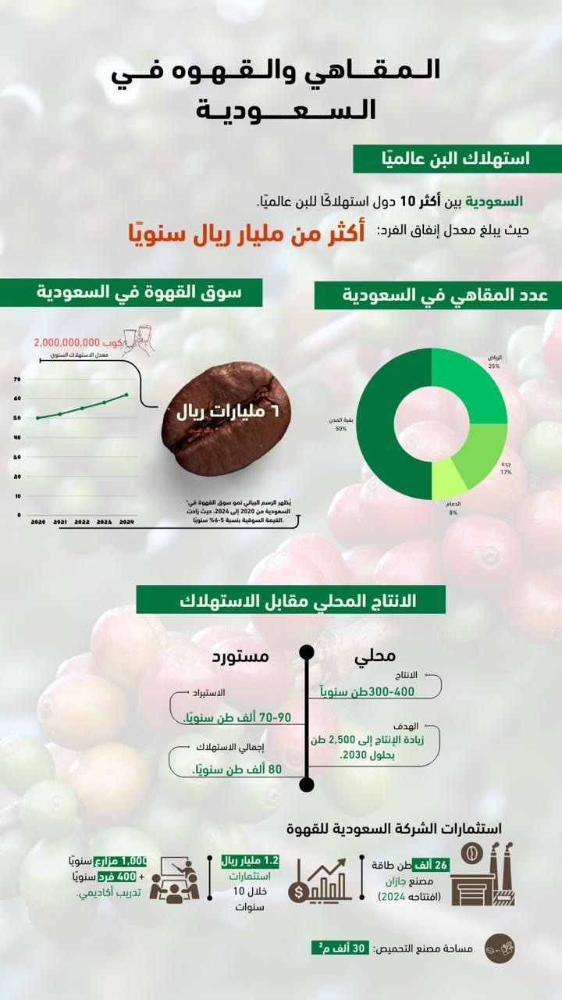

# ✨ Norah Alnasser | NAN Portfolio ✨

NAN


---
## 💼 التجربة المهنية: هيئة السوق المالية (CMA)
> **إدارة الإعلام والتواصل الرقمي | Media & Digital Communication**


* **صناعة المحتوى:** صياغة محتوى حملة التقرير السنوي 2024 وبرنامج تأهيل الخريجين.
* **التحليل الرقمي:** استخدام أدوات **Meltwater** وتصميم بنرات الموقع الرسمي للهيئة.

---
## 🎤 القيادة والتمثيل الإعلامي
### ملتقى النقد الإعلامي


* **إدارة الفريق:** قيادة العمل التنظيمي واستضافة إعلاميين بارزين.
---
## 🚀 الإنتاج الصحفي والحملات
### حملة "صحتك بجوالك"


| العنوان | الرابط |
| :--- | :--- |
| **معرض الدون بالرياض** | [🔗 قراءة الخبر](https://shahdnow.sa/240268/) |
| **مستقبل فنون العمارة** | [🔗 قراءة الحوار](https://shahdnow.sa/240411/) |
| **مقال يوم العلم** | [🔗 قراءة المقال](https://shahdnow.sa/336421/) |
---
## 📬 تواصل معي


2026 © نوره الناصر - NAN